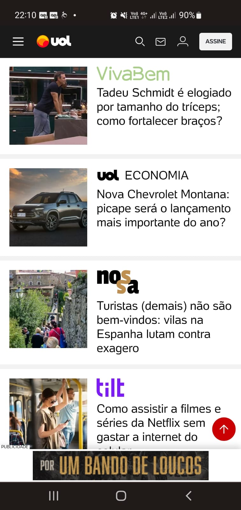

Design Principles Document
José A. Meirelles
White Space and Clean Design
InfoMoney
This website is very clean. With the white space the image and the news gain evidence.
PARC: Contrast
CCAA
The use of colors on this website is fantastic. The visualization is not tiring, despite the use of darker tones, and the contrast allows emphasis to the message that the company wants to convey.
Visual Hierarchy
uol
In this case the hierarchy is presented in word as a logo. The emphasis that this form of design gives to the website is excellent.